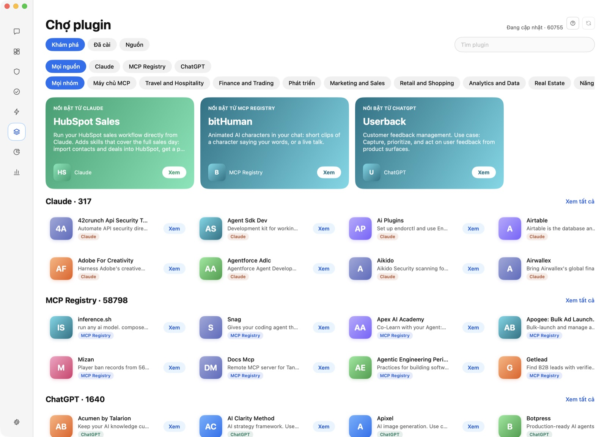
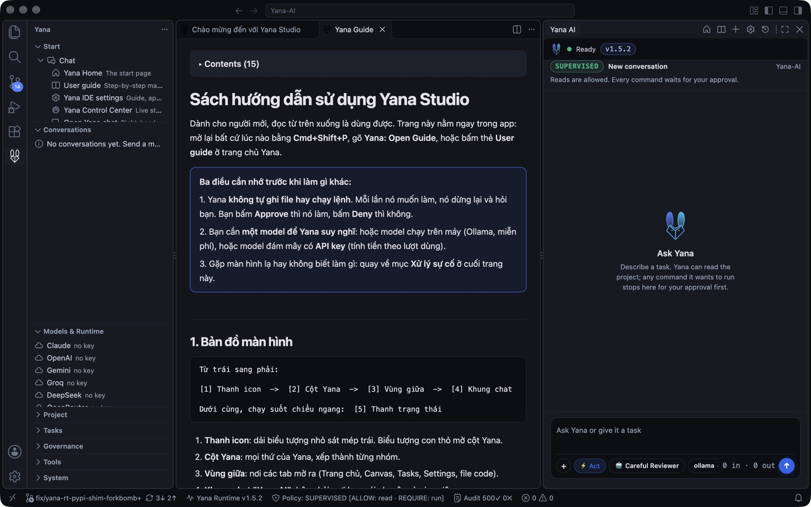
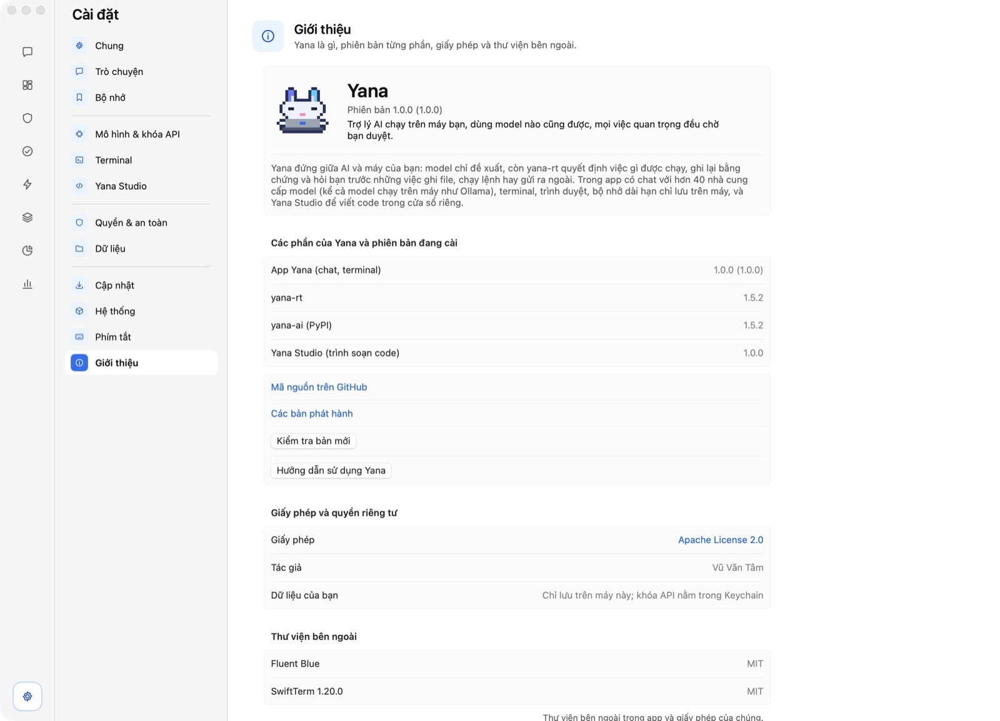
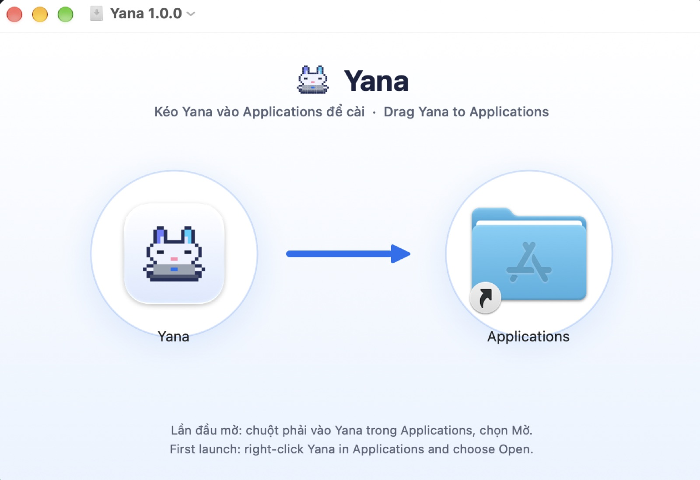

Trợ lý AI chạy trên máy bạn.
Việc quan trọng luôn chờ bạn duyệt.
Một file tải về, hai app: Yana (chat, terminal, chợ plugin) và Yana Studio (trình soạn code nền Code-OSS) mở từ Yana trong cửa sổ riêng. Dùng model nào cũng được, kể cả model chạy ngay trên máy bạn.
macOS Yana 1.0.0
Dành cho Mac chip Apple (M1 trở lên) chạy macOS 14 Sonoma trở lên. Mở file .dmg, kéo Yana vào Applications. Yana Studio đã nằm sẵn bên trong, không cần cài riêng.
ẢNH CHỤP
Giao diện thật của Yana 1.0




PHIÊN BẢN ĐANG PHÁT HÀNH
Ba thành phần, ba số phiên bản riêng
Yana (app), yana-rt (runtime Rust) và yana-ai (gói PyPI) phát hành độc lập nên số phiên bản không cần giống nhau. Số dưới đây được đọc trực tiếp từ GitHub, crates.io và PyPI mỗi lần bạn mở trang.
Yana
App macOS gồm Yana và Yana Studio. Tag phát hành dạng app-v….
yana-rt
Runtime Rust chạy các lượt chat và kiểm soát quyền của AI. Cài và cập nhật độc lập với app.
yana-ai
Lớp bảo vệ cho repository: quy tắc an toàn, hook và lệnh cho các AI agent.
Yana kiểm tra cả ba trong Cài đặt → Cập nhật và cài giúp bạn yana-rt và yana-ai ngay trong app. Nếu API không trả lời, trang giữ số liệu đã biết lần gần nhất.
CLI & REPOSITORY TOOLS
Cài công cụ dòng lệnh (PyPI & Cargo)
Hai công cụ này chạy độc lập, không bắt buộc cài app Yana. Dùng để gắn quy tắc an toàn và giám sát cho repository của bạn.
yana-ai: lớp bảo vệ AI cho Repository
Cài CLI Python để dùng các quy tắc an toàn (Truth Gate, Action Gate), slash commands và kiểm tra drift trước khi cho AI sửa code.
yana-rt: runtime và terminal
Runtime thực thi cốt lõi của Yana: chat streaming với model chạy trên máy (Ollama) hoặc đám mây, mọi lệnh đều chờ bạn duyệt.
🔒 Mở lần đầu trên macOS
Lần đầu mở Yana, chuột phải (Control-click) vào Yana trong Applications rồi chọn Mở. App được ký ad-hoc và chưa được Apple notarize nên macOS cảnh báo một lần. Nếu đã bị chặn: Cài đặt hệ thống → Quyền riêng tư & Bảo mật → Vẫn mở.
🧩 Studio đi kèm trong Yana
Yana Studio nằm ngay trong Yana.app và cập nhật cùng Yana, không còn tải riêng. Bấm Trình soạn code trong Yana để mở.
🦙 AI chạy trên máy bạn
Dùng model chạy offline qua Ollama, hoặc model đám mây bằng API key của bạn. Khóa API được giữ trong Keychain của macOS.